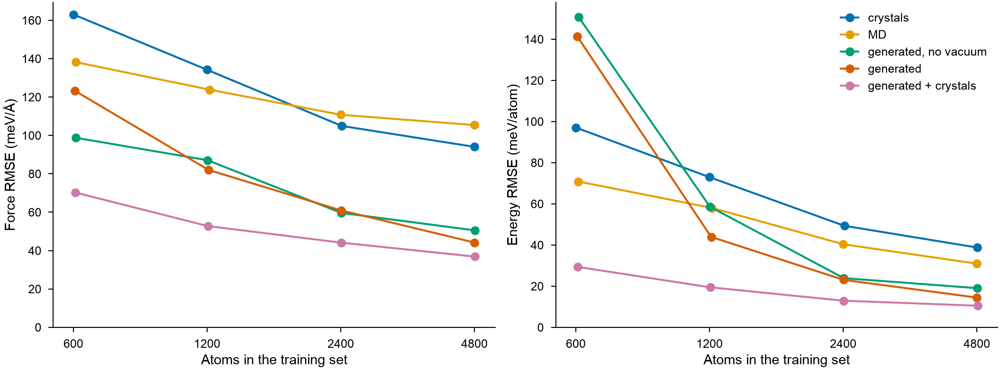
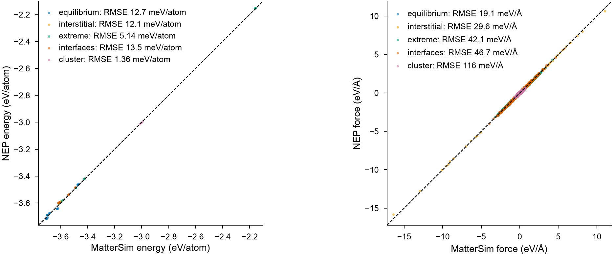

Generated training sets for aluminium¶
How well does a machine-learned potential learn from generated structures, against the usual training sets of perturbed crystals and molecular dynamics, and how many structures are enough? This page answers it for aluminium with a teacher and its students. The universal potential MatterSim (Yang et al. 2024) labels every structure in place of DFT; NEP models trained with torchnep (Wu et al. 2026) on each set are compared with it on structures none of them was trained on: crystals, defects, compressed and expanded solids, liquids, surfaces, grain boundaries and a cluster, and in molecular dynamics of their own.
The page runs on one GPU with MatterSim and torchnep installed. It took 70 minutes on an NVIDIA H100: 40 for the generation, the dynamics and the labels, 25 for the 120 trainings.
The teacher¶
MatterSim, an ASE calculator, becomes an MDAPY one, which labels frames with their energy, forces and virial and runs molecular dynamics:
import numpy as np
from mattersim.forcefield import MatterSimCalculator
from mdapy.interop import from_ase_calculator
mattersim = MatterSimCalculator(load_path="MatterSim-v1.0.0-1M.pth", device="cuda")
teacher = from_ase_calculator(mattersim)
def labelled(frames):
"""The frames with the energy, forces and virial of the teacher."""
out = []
for frame in frames:
found = teacher.compute(frame, ("energy", "forces", "virial"))
out.append(
frame.with_columns(forces=found.forces).with_info(
energy=found.energy, virial=found.virial
)
)
return out
Molecular dynamics runs in MDAPY, with the teacher or a student:
from mdapy.errors import CalculationFailed
from mdapy.neighbor import NeighborList
from mdapy.simulation import MolecularDynamics
def md(system, calculator, temperature, steps, every, start=0, seed=1):
"""Langevin dynamics of 2 fs steps: a snapshot every `every` steps after
the first `start`, up to one with two atoms closer than 1.5 Å."""
with MolecularDynamics(system, calculator, timestep=0.002) as run:
run.velocities(temperature, seed=seed)
try:
run.run(
steps,
ensemble="nvt",
temperature=temperature,
thermostat="langevin",
seed=seed,
thermo=steps,
save_every=every,
)
except CalculationFailed: # a model that fails: its snapshots so far
pass
frames = [f for f in run.frames if f.info["timestep"] > start]
out = []
for frame in frames:
if len(NeighborList.build(frame, 1.5).j):
break
kept = frame.select("element", "positions")
out.append(kept.with_info(timestep=None, time=None))
return out
Training sets¶
Five sets of up to 4800 atoms, each made three times with other seeds:
- crystals: fcc, bcc and hcp cells of 32 to 54 atoms at 0.85 to 1.15
times the volume of the crystal, their atoms displaced and their boxes
strained by
perturb; - MD: snapshots of molecular dynamics of 32 atoms with the teacher, from 300 K in the crystal to 2500 K in the liquid;
- generated, no vacuum:
generate_structureswith periodic cells only; - generated:
generate_structureswith its defaults, a fifth of the cells slabs or clusters; - generated + crystals: two thirds of the atoms generated, one third crystals, and the frames within 0.5 eV/atom of the lowest energy per atom weighted three times in the training.
The generated structures span half to twice the volume per atom of the crystal, 16.6 ų; each generation makes its default 1000 structures, some 7000 atoms, of which the sets take the first.
from mdapy.build import build_crystal
from mdapy.mlip import generate_structures, perturb
VOLUME = (8.3, 33.2)
BUDGET = 4800
SEEDS = (0, 1, 2)
fcc = build_crystal("fcc", 4.05, elements="Al", repeat=(2, 2, 2))
bcc = build_crystal("bcc", 3.24, elements="Al", repeat=(3, 3, 3))
hcp = build_crystal("hcp", 2.86, elements="Al", repeat=(3, 2, 2))
def first(frames, atoms=BUDGET):
"""The first frames, up to the number of atoms."""
out, count = [], 0
for frame in frames:
if count >= atoms:
break
out.append(frame)
count += len(frame)
return out
def scaled(system, factor):
"""The system with its volume times factor."""
matrix = system.box.matrix * factor ** (1 / 3)
return system.with_box(matrix, scale_positions=True)
def crystals(seed):
rng = np.random.default_rng(seed)
kinds = [(fcc, 0.1), (fcc, 0.25), (bcc, 0.15), (hcp, 0.15)]
frames = []
for k in range(160):
crystal, displacement = kinds[k % 4]
volume = np.exp(rng.uniform(np.log(0.85), np.log(1.15)))
frames += perturb(
scaled(crystal, volume), 1, displacement=displacement, strain=0.05, seed=rng
)
return first(frames)
def sampled_by_md(seed):
"""Snapshots every 60 fs of seven runs, taken from each in turn."""
conditions = [(300, 1.0), (600, 1.0), (900, 0.95), (900, 1.05), (1200, 1.0)]
conditions += [(1500, 1.1), (2500, 1.15)]
runs = [
md(scaled(fcc, v), teacher, t, 1060, 30, start=400, seed=100 * seed + k + 1)
for k, (t, v) in enumerate(conditions)
]
return first([run[i] for i in range(22) for run in runs])
def mixed(parts, shares):
"""The frames of the parts in turn, so that the atoms of each part keep
its share in every first part of the set, until one runs out."""
taken, atoms, out = [0] * len(parts), [0] * len(parts), []
while sum(atoms) < BUDGET:
k = min(range(len(parts)), key=lambda k: atoms[k] / shares[k])
if taken[k] == len(parts[k]):
break
out.append(parts[k][taken[k]])
taken[k] += 1
atoms[k] += len(out[-1])
return out
def training_sets(seed):
generated = generate_structures("Al", volume=VOLUME, seed=seed).structures
periodic = generate_structures("Al", volume=VOLUME, vacuum=0.0, seed=seed)
periodic = periodic.structures
return {
"crystals": crystals(seed),
"MD": sampled_by_md(seed),
"generated, no vacuum": first(periodic),
"generated": first(generated),
"generated + crystals": mixed([generated, crystals(seed + 50)], [2, 1]),
}
Each set is labelled and written as an extended XYZ file. The frames keep their order, so that the first of them make the smaller sets:
from pathlib import Path
from mdapy.io import write
Path("train").mkdir(exist_ok=True)
for seed in SEEDS:
for name, frames in training_sets(seed).items():
frames = labelled(frames)
if name == "generated + crystals":
energies = [f.info["energy"] / len(f) for f in frames]
low = min(energies) + 0.5
frames = [
f.with_info(weight=3.0) if e < low else f
for f, e in zip(frames, energies, strict=True)
]
write(f"train/{name}_{seed}.xyz", frames)
atoms = sum(len(f) for f in frames)
print(f"{name:21s} seed {seed}: {len(frames):3d} frames, {atoms} atoms")
crystals seed 0: 135 frames, 4804 atoms
MD seed 0: 150 frames, 4800 atoms
generated, no vacuum seed 0: 631 frames, 4800 atoms
generated seed 0: 730 frames, 4809 atoms
generated + crystals seed 0: 520 frames, 4820 atoms
crystals seed 1: 135 frames, 4804 atoms
MD seed 1: 150 frames, 4800 atoms
generated, no vacuum seed 1: 689 frames, 4804 atoms
generated seed 1: 686 frames, 4800 atoms
generated + crystals seed 1: 478 frames, 4807 atoms
crystals seed 2: 135 frames, 4804 atoms
MD seed 2: 150 frames, 4800 atoms
generated, no vacuum seed 2: 624 frames, 4814 atoms
generated seed 2: 713 frames, 4800 atoms
generated + crystals seed 2: 497 frames, 4822 atoms
Every set holds 4800 atoms: the crystals in 135 frames, MD in 150, the generated sets in 620 to 730 small cells of 7 to 8 atoms on average, the first of the 1000 structures of each generation.
Test structures¶
Fifteen sets of structures that none of the training sets holds, in five groups, labelled by the teacher:
from mdapy import Box
from mdapy.build import add_interstitials, add_vacuum, build_polycrystal
def crystal(structure, a, repeat):
return build_crystal(structure, a, elements="Al", repeat=repeat)
def shaken(system, count, displacement, seed):
return perturb(system, count, displacement=displacement, strain=0.0, seed=seed)
fcc3 = crystal("fcc", 4.05, (3, 3, 3))
vacancy = fcc3.filter(np.arange(len(fcc3)) != 0)
interstitial = add_interstitials(fcc3, "Al", 1, min_distance=1.9, seed=2)
s100 = add_vacuum(crystal("fcc", 4.05, (3, 3, 4)), 12.0)
ORIENTATION_111 = [[1, -1, 0], [1, 1, -2], [1, 1, 1]]
s111 = build_crystal(
"fcc", 4.05, elements="Al", orientation=ORIENTATION_111, repeat=(2, 1, 2)
)
s111 = add_vacuum(s111, 12.0)
grains = build_polycrystal(fcc, Box(np.eye(3) * 18.0), 3, min_distance=2.2, seed=1)
cluster = fcc
for axis in range(3):
cluster = add_vacuum(cluster, 10.0, axis=axis)
# a solid-liquid interface: the upper half melted with the lower one held
# by the movable column, then all of it at 900 K
slab = scaled(crystal("fcc", 4.05, (3, 3, 8)), 1.06)
lower = slab["positions"][:, 2] < slab.box.matrix[2, 2] / 2
held = slab.with_columns(movable=np.repeat(~lower[:, None], 3, axis=1))
melted = md(held, teacher, 2200, 400, 400, seed=1003)[-1]
tests = {
"MD 300 K": md(fcc3, teacher, 300, 800, 100, start=500, seed=1000),
"bcc": shaken(crystal("bcc", 3.24, (3, 3, 3)), 4, 0.1, 4),
"hcp": shaken(crystal("hcp", 2.86, (3, 2, 2)), 4, 0.1, 5),
"vacancy": shaken(vacancy, 4, 0.08, 12),
"fcc 0.8 V0": shaken(scaled(fcc3, 0.8), 4, 0.08, 7),
"interstitial": shaken(interstitial, 4, 0.08, 13),
"fcc 0.6 V0": shaken(scaled(fcc3, 0.6), 4, 0.07, 6),
"fcc 1.3 V0": shaken(scaled(fcc3, 1.3), 4, 0.12, 8),
"MD 900 K": md(scaled(fcc3, 1.03), teacher, 900, 800, 100, start=500, seed=1001),
"liquid 1600 K": md(
scaled(fcc3, 1.12), teacher, 1600, 1100, 100, start=800, seed=1002
),
"surface (100)": shaken(s100, 3, 0.08, 9),
"surface (111)": shaken(s111, 3, 0.08, 10),
"grain boundaries": shaken(grains, 2, 0.05, 11),
"solid-liquid": md(melted, teacher, 900, 120, 40, seed=1004),
"cluster": shaken(cluster, 4, 0.1, 14),
}
tests = {name: labelled(frames) for name, frames in tests.items()}
GROUPS = {
"equilibrium": ["MD 300 K", "bcc", "hcp", "vacancy", "fcc 0.8 V0"],
"interstitial": ["interstitial"],
"extreme": ["fcc 0.6 V0", "fcc 1.3 V0", "MD 900 K", "liquid 1600 K"],
"interfaces": [
"surface (100)",
"surface (111)",
"grain boundaries",
"solid-liquid",
],
"cluster": ["cluster"],
}
Training¶
Each set and its first 600, 1200 and 2400 atoms train two NEP models each, of other random seeds, with the same model and schedule; only the batch follows the size of the frames, about 150 atoms in each. All the frames train the models, none held out: the test structures below judge them. Six trainings share the GPU at a time:
import subprocess
import sys
from concurrent.futures import ThreadPoolExecutor
from mdapy.io import read_trajectory
NEP_IN = """type 1 Al
version 4
cutoff 6 4
n_max 4 4
basis_size 8 8
l_max 4 2 0
neuron 50
epoch 300
batch {batch}
lr 0.01
stage2 1
"""
NAMES = ["crystals", "MD", "generated, no vacuum", "generated", "generated + crystals"]
def train(name, seed, budget, run):
"""A NEP model of the first frames of a training set up to the budget of
atoms: its file, and the atoms it was trained on."""
folder = Path("runs") / f"{name}_{seed}_{budget}_{run}"
folder.mkdir(parents=True, exist_ok=True)
frames = first(read_trajectory(f"train/{name}_{seed}.xyz"), budget)
atoms = sum(len(f) for f in frames)
write(folder / "train.xyz", frames)
batch = max(1, round(150 * len(frames) / atoms))
(folder / "nep.in").write_text(NEP_IN.format(batch=batch))
code = (
"from torchnep import train_nep; train_nep('nep.in', 'train.xyz', "
f"device='cuda', run_seed={run})"
)
command = [sys.executable, "-c", code]
subprocess.run(command, cwd=folder, check=True, capture_output=True)
return folder / "nep_best.txt", atoms
jobs = [
(name, seed, budget, run)
for name in NAMES
for seed in SEEDS
for budget in (600, 1200, 2400, BUDGET)
for run in (0, 1)
]
with ThreadPoolExecutor(6) as pool:
models = dict(zip(jobs, pool.map(lambda job: train(*job), jobs), strict=True))
Errors on the test structures¶
The root mean square errors of the forces and energies of the models of the largest sets, the mean of the six of each set over the test sets of each group:
import polars as pl
from mdapy.calculators import NEP
from mdapy.mlip import predict
rows = []
for (name, seed, budget, run), (path, atoms) in models.items():
nep = NEP(path)
row = {"set": name, "budget": budget, "atoms": atoms}
for test, frames in tests.items():
rmse = predict(frames, nep).rmse()
row[f"F {test}"] = 1000 * rmse["forces"]
row[f"E {test}"] = 1000 * rmse["energy"]
rows.append(row)
errors = pl.DataFrame(rows)
largest = errors.filter(pl.col("budget") == BUDGET)
print("forces (meV/Å) | energies (meV/atom)")
print(" " * 21 + "".join(f"{group:>14s}" for group in GROUPS))
for name in NAMES:
part = largest.filter(pl.col("set") == name)
cells = [
f"{np.mean([part['F ' + t].mean() for t in members]):5.0f} |"
f"{np.mean([part['E ' + t].mean() for t in members]):5.0f}"
for members in GROUPS.values()
]
print(f"{name:21s}" + "".join(f"{c:>14s}" for c in cells))
forces (meV/Å) | energies (meV/atom)
equilibrium interstitial extreme interfaces cluster
crystals 14 | 2 569 | 22 71 | 43 43 | 13 317 | 328
MD 13 | 4 756 | 27 97 | 49 24 | 3 276 | 211
generated, no vacuum 30 | 14 40 | 17 46 | 13 47 | 12 198 | 98
generated 29 | 15 35 | 18 48 | 7 48 | 16 100 | 34
generated + crystals 20 | 10 35 | 10 39 | 6 39 | 11 107 | 29
The models of perturbed crystals and of MD are best near equilibrium, and those of MD on surfaces too, where its liquid snapshots give atoms with few neighbors; far from what they hold they fail: an interstitial atom (0.6 to 0.8 eV/Å), half the volume of the crystal and the cluster. Generated structures cover all of these. Their slabs and clusters, the default, halve the error of the cluster's forces and divide that of its energy by three; flat surfaces gain nothing, (111) better and (100) worse. With a third of crystals, generated structures are the best or close to it in every group but equilibrium and interfaces.
The mean over the fifteen test sets, against the atoms of the training set:
from mdapy.visualization import plot
curves = (
errors.with_columns(
F=pl.mean_horizontal(pl.col("^F .*$")),
E=pl.mean_horizontal(pl.col("^E .*$")),
)
.group_by("set", "budget")
.agg(pl.col("atoms", "F", "E").mean())
.sort("budget")
)
with plot.style():
fig, axes = plot.figure("double", ncols=2)
for name in NAMES:
part = curves.filter(pl.col("set") == name)
axes[0].plot(part["atoms"], part["F"], marker="o", label=name)
axes[1].plot(part["atoms"], part["E"], marker="o", label=name)
axes[0].set_ylabel("Force RMSE (meV/Å)")
axes[1].set_ylabel("Energy RMSE (meV/atom)")
for ax in axes:
ax.set_xscale("log", base=2)
ax.set_xticks([600, 1200, 2400, 4800], ["600", "1200", "2400", "4800"])
ax.set_xlabel("Atoms in the training set")
ax.set_ylim(bottom=0)
axes[1].legend()
plot.save(fig, "images/aluminium-learning", formats=("png",))

The mean errors over the fifteen test sets. Those of crystals and MD fall slowly, as more of the same adds little, to about 100 meV/Å at 4800 atoms; those of the generated sets faster, to 44 and 51. Generated structures with crystals are best at every size, 37 meV/Å and 11 meV/atom at 4800 atoms, and still falling.
The predictions of one model of generated structures with crystals, the first of the largest set, against the teacher on every test structure:
path, _ = models[("generated + crystals", 0, BUDGET, 0)]
nep = NEP(path)
with plot.style():
fig, (left, right) = plot.figure("double", ncols=2)
for group, members in GROUPS.items():
p = predict([frame for test in members for frame in tests[test]], nep)
for ax, values, unit in (
(left, p.energy, "meV/atom"),
(right, p.forces, "meV/Å"),
):
plot.parity(
values[:, 0], values[:, 1], ax=ax, label=group, unit=unit, scale=1000
)
left.set_xlabel("MatterSim energy (eV/atom)")
left.set_ylabel("NEP energy (eV/atom)")
right.set_xlabel("MatterSim force (eV/Å)")
right.set_ylabel("NEP force (eV/Å)")
plot.save(fig, "images/aluminium-parity", formats=("png",))

One model, of the first seed: the energies within 1 to 14 meV/atom and the forces within 19 to 47 meV/Å in every group but the cluster (116 meV/Å), for forces from below 1 eV/Å in the cluster to 16 eV/Å around the interstitial atom, the largest of the tests.
Properties¶
The lattice constant, elastic constants, vacancy formation energy, surface energies and the energies of bcc and of compressed fcc against the crystal, of the teacher, and the mean absolute difference of the models of the largest sets from it:
from mdapy.lattice_dynamics import elastic_constants
from mdapy.simulation import minimize, surface_energy, vacancy_formation_energy
def attempt(compute):
"""The value, or NaN where the calculation fails, as it may with a poor
model."""
try:
return float(compute())
except Exception:
return np.nan
def properties(calculator):
def energy(system):
return calculator.compute(system, ("energy",)).energy / len(system)
def relaxed(structure, a):
start = build_crystal(structure, a, elements="Al")
return minimize(start, calculator, cell="full", max_force=1e-3).system
def fcc_cell(a, **options):
return build_crystal("fcc", a, elements="Al", **options)
def elastic(i, j):
cell = fcc_cell(a, repeat=(2, 2, 2))
return elastic_constants(cell, calculator, relax=False).constants[i, j]
def vacancy():
cell = fcc_cell(a, repeat=(3, 3, 3))
return vacancy_formation_energy(cell, calculator, max_force=1e-3).energy
def surface(**options):
cell = fcc_cell(a, **options)
return surface_energy(cell, calculator, max_force=1e-3).energy
def lattice_constant():
cell = relaxed("fcc", 4.05)
return (4 * cell.box.volume / len(cell)) ** (1 / 3)
a = attempt(lattice_constant)
return {
"a (Å)": a,
"C11 (GPa)": attempt(lambda: elastic(0, 0)),
"C12 (GPa)": attempt(lambda: elastic(0, 1)),
"C44 (GPa)": attempt(lambda: elastic(3, 3)),
"E_vac (eV)": attempt(vacancy),
"γ100 (J/m²)": attempt(lambda: surface(repeat=(2, 2, 4))),
"γ111 (J/m²)": attempt(
lambda: surface(orientation=ORIENTATION_111, repeat=(2, 1, 3))
),
"bcc (meV)": attempt(
lambda: 1000 * (energy(relaxed("bcc", 3.24)) - energy(relaxed("fcc", 4.05)))
),
"0.6 V0 (meV)": attempt(
lambda: 1000 * (energy(scaled(fcc_cell(a), 0.6)) - energy(fcc_cell(a)))
),
}
reference = properties(teacher)
found = pl.DataFrame(
[
{"set": name} | properties(NEP(path))
for (name, seed, budget, run), (path, atoms) in models.items()
if budget == BUDGET
]
)
print(f"{'':21s}" + "".join(f"{key:>13s}" for key in reference))
print(f"{'teacher':21s}" + "".join(f"{v:13.3f}" for v in reference.values()))
for name in NAMES:
part = found.filter(pl.col("set") == name)
cells = [
np.nanmean(np.abs(part[key].to_numpy() - value))
for key, value in reference.items()
]
print(f"{name:21s}" + "".join(f"{c:13.3f}" for c in cells))
a (Å) C11 (GPa) C12 (GPa) C44 (GPa) E_vac (eV) γ100 (J/m²) γ111 (J/m²) bcc (meV) 0.6 V0 (meV)
teacher 4.037 117.787 61.329 34.731 0.596 0.755 0.622 76.370 1582.912
crystals 0.002 6.280 0.759 2.514 0.097 0.129 0.089 3.021 165.185
MD 0.001 2.224 0.961 0.707 0.045 0.018 0.029 7.993 195.059
generated, no vacuum 0.028 13.319 13.497 2.352 0.044 0.007 0.013 22.446 181.363
generated 0.010 6.509 8.799 4.226 0.041 0.036 0.050 31.695 65.631
generated + crystals 0.006 4.177 5.657 4.831 0.030 0.036 0.059 22.666 38.881
Near equilibrium, the models of crystals and of MD give the lattice constant within 0.002 Å, the elastic constants within 6 GPa and bcc over fcc within 8 meV/atom; those of generated structures alone are off by 0.01 to 0.03 Å, up to 13 GPa and over 20 meV/atom. With a third of crystals, generated structures come to 0.006 Å and 4 to 6 GPa, with the best vacancy formation energy, and give the energy of fcc at 0.6 V0 within 39 meV/atom, which crystals and MD miss by 165 and 195.
On their own¶
The real test of a model is the molecular dynamics it runs by itself: 108 atoms for 1000 steps of 2 fs in a liquid at 3000 K, at half the volume of the crystal at 1500 K and at 1.6 times it at 600 K. The teacher computes the five snapshots of each run; a run fails when two atoms come within 1.5 Å.
RUNS = {"liquid 3000 K": (1.15, 3000), "0.5 V0 1500 K": (0.5, 1500)}
RUNS["1.6 V0 600 K"] = (1.6, 600)
rows = []
for (name, seed, budget, run), (path, atoms) in models.items():
if budget != BUDGET:
continue
student = NEP(path)
row = {"set": name}
for label, (volume, temperature) in RUNS.items():
start = scaled(fcc3, volume)
frames = md(start, student, temperature, 1000, 200)
row[f"failed {label}"] = len(frames) < 5
row[f"F {label}"] = np.nan
if frames:
rmse = predict(labelled(frames), student).rmse()
row[f"F {label}"] = 1000 * rmse["forces"]
rows.append(row)
own = pl.DataFrame(rows)
print("forces (meV/Å) and the runs that failed")
print(" " * 21 + "".join(f"{label:>17s}" for label in RUNS))
for name in NAMES:
part = own.filter(pl.col("set") == name)
cells = [
f"{np.nanmean(part['F ' + label].to_numpy()):5.0f}"
f" {part['failed ' + label].sum()}/{len(part)}"
for label in RUNS
]
print(f"{name:21s}" + "".join(f"{c:>17s}" for c in cells))
forces (meV/Å) and the runs that failed
liquid 3000 K 0.5 V0 1500 K 1.6 V0 600 K
crystals 93 0/6 1499 2/6 127 0/6
MD 66 0/6 2156 6/6 80 0/6
generated, no vacuum 77 0/6 81 0/6 70 0/6
generated 81 0/6 102 0/6 76 0/6
generated + crystals 73 0/6 84 0/6 74 0/6
At half the volume of the crystal, the models of crystals and of MD fail: two atoms come within 1.5 Å in 2 and in all 6 of their runs, and where they still run their forces are off by 1.5 to 2.2 eV/Å. No model of a generated set fails, and their errors stay below 0.11 eV/Å. MD is best in the liquid, which it was trained on.
How many structures¶
Each generation made its default 1000 structures, some 7000 atoms, of which
the sets took 4800. The errors of the generated sets still fall at 4800
atoms, by 15 to 30 % in the last doubling, while those of crystals and MD
fall by 5 to 10 %: more of the same adds little, more generated structures add new
environments. For aluminium, some thousands of atoms of generated
structures, with a third as many of perturbed crystals for the details of
equilibrium, make a set that holds from compressed solids to liquids and
clusters, in cells small enough for DFT to compute many of them: with
k-points of a fixed density, a calculation costs less per atom the fewer
atoms it has. The entropy of a generation tells how much more structures
would add, and extend makes them where it ended; see
Generated structures.
See also¶
- Generated structures and perturbed structures: the training sets.
- Coverage of descriptor space: comparing sets without labels.
- Training sets from VASP: labels from DFT.
- A machine-learned potential for CrCoNi: checking a model against DFT and measurements.